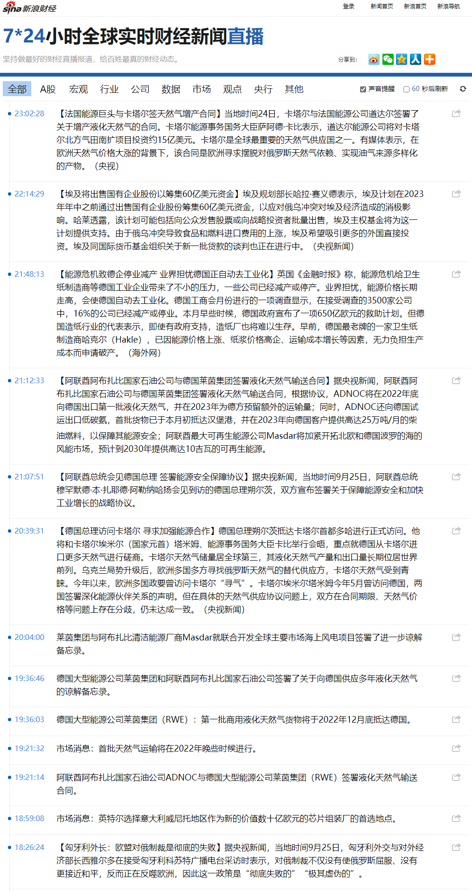
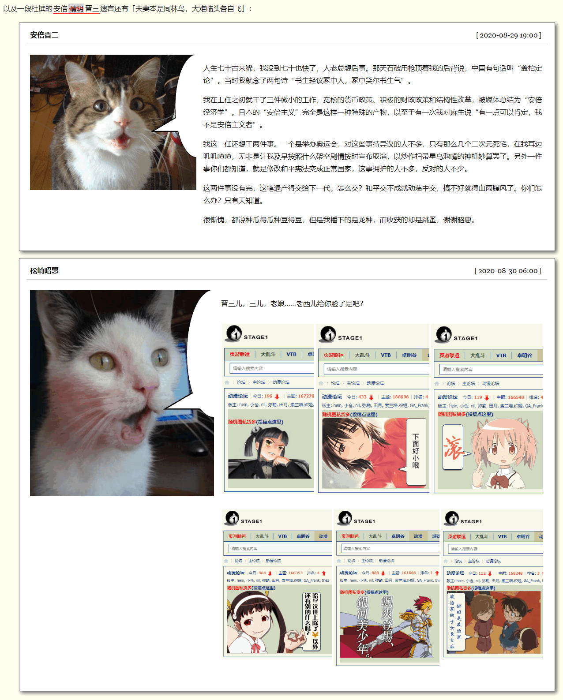

fanhan-inside
前情提要：
统计上的相关性：
囧斋起居注・饮食
昨天（9/15）饮食：
| 饭点 |
时间 |
项目 |
能量 |
蛋白质 |
脂肪 |
碳水 |
钠 |
| 早饭 |
05:30 |
地狱辣味豚骨拉面 ×1 桶 |
2341 |
14.6 |
24 |
71.7 |
2976 |
| 28% |
24% |
40% |
24% |
149% |
| 间食 |
09:30 |
招牌叉烧豚骨拉面 ×1 桶 |
2284.1 |
19.05 |
20.78 |
70.95 |
3302.6 |
| 五香蛋 ×1 个 |
27.1% |
31.2% |
34.2% |
23.3% |
166.7% |
| 午饭 |
11:40 |
浓情番茄豚骨拉面 ×1 桶 |
2452.1 |
17.25 |
22.18 |
79.25 |
3686.6 |
| 五香蛋 ×1 个 |
29.1% |
29.2% |
36.2% |
26.3% |
185.7% |
| 间食 |
13:30 |
卤鸡腿 ×1 个 |
1108 |
25.6 |
10.14 |
114.3 |
1141.4 |
| AD钙奶（220毫升） ×1 瓶 |
13.4% |
43.4% |
16.2% |
5.4% |
58.2% |
| 间食 |
15:00 |
妈咪重辣鸡肉味干拌杯面 ×1 杯 |
1735 |
9.2 |
13.34 |
160.6 |
1192.4 |
| AD钙奶（220毫升） ×1 瓶 |
21.4% |
16.4% |
22.2% |
21.4% |
60.2% |
| 晚饭 |
18:30 |
卤香牛肉板面 ×1 桶 |
3696 |
32.7 |
46.5 |
83.5 |
5002 |
| 豆干 ×100 克 |
44% |
55% |
78% |
28% |
250% |
| 夜宵 |
22:00 |
岩烧乳酪面包 ×1 个 |
4134.8 |
43.96 |
29.8 |
29.8 |
128.06 |
| 香辣鸭腿 ×1 个 |
52.2% |
74% |
74% |
49.6% |
44.2% |
| 橘子罐头 ×1 瓶 |
|
- 范注：粗体项目为邢台当地企业「今麦郎」生产的方便面产品
今天（9/16）截止现在的饮食：
| 饭点 |
时间 |
项目 |
能量 |
蛋白质 |
脂肪 |
碳水 |
钠 |
| 早饭 |
06:45 |
地狱辣味豚骨拉面 ×1 桶 |
3438 |
93.6 |
44 |
73.7 |
4476 |
| 豆干 ×1 袋 |
41% |
56% |
73% |
25% |
174% |
| 间食 |
08:45 |
浓情番茄豚骨拉面 ×1 桶 |
3367 |
91.9 |
39.6 |
80.5 |
4973 |
| 豆干 ×1 袋 |
40% |
54% |
65% |
27% |
199% |
| 午饭 |
11:20 |
自热火锅 ×1 盒 |
9117.6 |
82.62 |
83.57 |
465.6 |
5345.7 |
| 瓦罐带鱼 ×200 克（约） |
109% |
138.8% |
137.9% |
92.3% |
267.7% |
| 豆沙馅油炸小面包 ×1 袋 |
|
| AD钙奶 ×2 小瓶（220ml装） |
| 间食 |
16:00 |
山楂罐头 ×1 瓶 |
2170 |
0 |
0 |
122.5 |
210 |
| 28% |
0 |
0 |
42% |
14% |
| 晚饭 |
20:15 |
微辛猪肚鸡汤风味拉面 ×1 桶 |
3087 |
92.4 |
34.9 |
73.2 |
4759 |
| 豆干 ×1 袋 |
37% |
54% |
58% |
25% |
188% |
- 范注：粗体项目为邢台当地企业「今麦郎」生产的方便面产品
素材兼情报：
范某截图备份于此


解读：
（随后回复中逐步展开）
fanhan-inside
序论
昨天的日记在前一篇日志当中差不多都以截图的形式提供了，略。直到今天午夜十二点半才上床睡觉，两点半就爬起来了。白天打盹小憩好几次，确实精力不济。
长话短说，如果昨天（今麦郎总部所在地）邢台当地知名度较高且叼着比较有面子的卷烟不是「荷花」而是其它什么名称，并且长沙还没有同样名称的地点，那么今天还是会出事，只不过事发当地的名称会随之（烟名）变化。这个原则是在《设定集・缘起》当中就阐述过的，理解了这一点就能理解整部作品⸺扯远了。
那就顺便说几句 ，是否有读者看到「（现实名称）随之（认知作战中出现的现实或架空名词）变化」的时候，认为「地名绑定于地点不会说变就变」？但是「对于地点的称呼」是可以变的⸺甚至可以暂时不需要达成共识，因为共识也是会变的※⸺新闻报道乃人类所写，抖音快手短视频乃人类所拍，这种场合运用唯心主义处理更为简洁。
- ※ 葛宇路事件：“一块路牌挂了3年，在网上发酵了3天，3分钟就被拆掉了。”⸺葛宇路
这是偶然与必然的范畴，印象里「中学政治课本」在讲到「（马克思主义）哲学」那一块的时候就会提及这些几乎所有现当代哲学流派都承认的范畴于是不能摆出「球资委」派头大手一挥划拨所有公众领域资产到谁谁名下。
同理可证，「体」「用」是中国传统哲学基本范畴，也不能随随便便就划拉到谁名下。这是在《从阳明扯到胡宏：俩耗材辩经与理气道性》当中就阐述过的，此处不再重复。
回到主题，可能有读者看不明白其中逻辑，尤其是理解不了邢台学校霸凌与当地食品企业之间的关系，毕竟「全网发酵」的短视频当中一个字都没提到「今麦郎」或者「拉面」。
邢台学校霸凌与邢台大手会社之间大约的确没关系，但是拍摄短视频的「邢台人士」，与绕着我转悠并放话「全球遭瘟就是给你小子一个人预备的」并且有大批同好同志甚至同僚与其同路同谋之「丰台人士」，肯定有关系。
哪怕最近开始关注我的个人博客站点的读者，也能隐约感觉到其中似乎存在着统计上的相关性。这里面向其它读者，简单解读其中蕴含的充沛政治和意识形态内容以及引领的激烈政治和意识形态斗争新动向。
先从乍一看伪装成社会新闻甚至「人畜无伤の美食话题」这种田园风光般惬意且温馨的氛围当中出现的刀光剑影甚至金戈铁马关键字「拉面」说起，提纲挈领的一句话：
在「兰州拉面」遍布全国之前，青海化隆在『道上』的注册商标是「无缝钢管“化隆造”」。
各位读者，本篇回复告一段落⸺请欣赏各大宣传阵地当中活蹦乱跳的色目情报掮客插播广告⸺下一贴回复，咱们再见。
fanhan-inside
第一层：抽荷花烟烧荷花园
“怂哔捧哏的把短视频发得全网都是，咋不见牛哔的逗哏出来甩包袱呢？”
“丫那儿网断了……”
范某截图备份于此


本篇回复，是在《范版东幻异闻录》〔045〕全方位全天候全频段骚扰无死角的家贼你见过吗？结合时事新闻详细解读色目情报掮客「神转折骚操作」的俗套伎俩并亲自示范「名菜“九转大肠”之后还有小吃“小肠×卤煮”伺候」的舆论持久战⸺这次才到哪儿吖⸺之后再次结合时事新闻以及亲身经历示范一遍。
由于最近码字及时备份各个场景的相关上下文，各位读者看起来可能更容易理解，色目情报掮客只是广告承接方或曰乙方，真正在吉普赛社区「军休所」附近设立据点/联络处/办事处的甲方才是「化隆无缝钢管厂」那种割据一方的军阀，进京落户也是为了发展下线和销售渠道的目的，出现「社会人」担任主演并不奇怪，就连乍一看普通居民都有责任义务为「会社」献计出力拉壮丁赚上梁山骗上贼船：「走私军火、毒品、人口你想干哪一行」？
长话短说，昨天中午刚出楼门，就发现周边的群众演员茂盛了点，纷纷围观身着短裤拖着两条象皮腿步履蹒跚出门先去霸凌比我年轻两岁的健康人再出小区找其膀大腰圆还有地痞流氓泼皮无赖帮闲的江湖好汉草莽豪杰“父亲”拿烟扔垃圾的我。实际上还没出楼门，就看见曾经在「湘潭铺子拥军超市」门口站岗放哨的哥布林乙（就是看见我就举起智能手机打电话“喂，洋桥派出所吗”那位）牵着两条狗经过……很久没看见哥布林甲了，尤其是没见着其站岗放哨的英姿。
前情提要：
其中「ゴブリンＡ・Ｂ」就是以湘潭铺子门口「哥布林甲・乙」为原型的，每次途径「拥军超市」据点/联络站/办事处，它们嘴里总没好话，哪怕我只是路过，也能听见它们谈论一些「业务」相关话题。
所以嘛，按照贝叶斯方法论需要预估一个先验假设，然后再开始根据接收的信息调整结论。
只不过，
- 对这俩哥布林所属会社的先验假设就是「邵阳铺子」只不过扯起大救星（其实后台应该是其它与大救星不对付的湘潭人士）的旗号当挡箭牌，
- 用于类比的已经由权威机构认证过的替代团伙是「化隆无缝钢管厂」转型升级为「兰州拉面」冒充别人到处招摇撞骗开展业务（真出了事败坏的也是兰州形象）可见其暗中从事行当的危险性，
- 背景的先验假设是「上天山的八千湘女的娘家人带着新疆极端组织恐怖分子“亲戚”进京落户」，
- 内援的先验假设是「洗白染红的晋绥陕甘宁毒贩」，
- 外援的先验假设是「金三角金新月的境外毒贩」，
- 人财物流通网络的先验假设是「王震的老关系在社会上的人脉」，
- 保护伞的先验假设是「一旦出事就去 新疆躲风头的“黄台吉转世灵童”在 海里的人脉」
……然后各种情报主动怼我脸上，一次一次一条一条的证实，在迷宫地下城恶人谷摸爬滚打四十余年的我还是没经历过大风大浪，实在是心地太善良了。
同理可证，卷烟不比拉面，虽然并非见不得光但是无法公开打广告属于灰色地带，在传媒行业也就比毒品的待遇高那么一点而已。所以乙方要仔细瞄准目标群体⸺以抽烟为社交方式的社会人⸺决定剧本和演员，实际上在全面禁烟至少控烟的背景下，甲方的「半地下」分销机构各色员工使用的的「营业手段」，与真正的走私贩毒比起来，也就合法了那么一点而已。
就从「荷花烟高大上」广告出台的第二天就有「荷花园火势熏天」的回应，相信有关部门（及其临时工，包括但不限于外包的武德派遣“哥布林甲・乙”那种）都是连夜做方案并拍板执行，效率这么高，也能猜出此事非同小可，不是谁或啥插科打诨嬉皮笑脸就能蒙混过关的。
给个旁证：
范某截图备份于此

这乍一看的消防事故，实际上与台湾、白金汉宫老佛爷乃至之前其它敏感话题一个待遇。
fanhan-inside
第二层：“牛油果自由”“切糕自由”与“化隆拉面自由”
“兰州拉面和日本拉面，你怎么选？”
“傻哔！”
“日本拉面和兰州拉面，哪个更好吃？”
“纯傻哔！！”
“兰州拉面和日本拉面，谁更物美价廉？”
“真の傻哔！！！”
“咱个辍学傻哔天天在抖音上扮小丑还能一字百元年入四千万，你丫不服？”
“……”
“哈尔滨无缝钢管厂与化隆无缝钢管厂刚在撒马尔罕签署文件，达成了全天候战略合作伙伴关系，乔四爷武德充沛侠义无双一力降十会咋地吧？”
范某截图备份于此


范某摘抄备份于此
现在你要问了：俄罗斯人的理科很强，数学特别棒，俄罗斯工程师无论在苏联时期还是在海外都很成功。国家怎么会造不出有全球市场竞争力的产品呢？显然，并不是技术技能方面的限制。
牛油果（酪梨）给出了这个问题的答案。
你听说过“血酪梨”（Blood Avocados）吗？之所以说它带“血”是因为，墨西哥几乎所有的牛油果生产都由卡特尔控制。因此，购买墨西哥牛油果时，你就直接资助了有组织犯罪。
许多人对“卡特尔”的样子存在误解，他们想象卡特尔是一帮拿着砍刀、衣衫褴褛的流浪汉。非也，卡特尔看起来是这样的。这些是哈利斯科卡特尔的战士，正在欢呼他们黑帮老大埃尔门乔的名字。他们看起来像军队。因为他们就是军队。
美国经济学家曼瑟尔·奥尔森把国家概念化为一个帮派。
在这个帮派的初创阶段，它是游寇性质的、四处流窜、烧杀抢掠无恶不作的犯罪团伙，丝毫不关心负面外部性影响。但当它安定下来时，会变成破坏性较小的固定匪徒。这便为文明化铺平了道路。
许多人以为奥尔森的理论仅仅是一种分析工具。我不同意。许多帝国如罗马人或奥斯曼人，似乎一开始就是名副其实的土匪帮派。这就是为什么关于他们起源的记录这么少，他们不关心回头去记录那个阶段。
嗯，在这个语境下，像哈利斯科这样的卡特尔就像一个国家的原型。它事实上也具有许多国家属性，可能与我们追溯赞美的中世纪“国家”没有太大区别。这是可以理解的。
但，为什么是卖牛油果？为什么不是椅子？不是智能手机应用？
黑手党很单纯，他们要么把生产彻底毁掉，要么自身演变为不是黑手党的别的存在，否则管理不了复杂事物。
比如说，如果他们进入机械生产领域，要么破产，要么不再做黑手党。
设想假如他们进入一门复杂的生意，不得不直接进行熊彼特所说的“创造性破坏”的话，他们很快就不得不雇用书呆子技术男，还得提拔这些人。最终黑手党“内部”的帮派权力结构将不可避免地改变，变得有利于技术男。
我有一个论点：对一个组织的生存具有至关重要意义的进程，定义了这个组织将演化为什么样子；如果有什么东西对生存很重要，那么提供这东西的人就能撬动权力，此前的大佬就会变得无足轻重。这就是为什么许多老一代黑手党后来演变成了其他组织。
因此，经济发展会让权力偏转，它是权力结构演化的主因。
这也可以解释为什么许多当权者会蓄意破坏经济发展。太复杂了他们管理不了，且会让权力结构向着不利于他们的方向改变。
这就是为什么卡特尔会选择牛油果。这种资源开采生意提供了能进行贸易的出口商品，是黑手党理想的草料基地。由于资源是通过暴力威胁获取的，他们必须投射出凶暴的、不可预测的形象。因此美国不得不制裁卡特尔并禁止牛油果进口。
这就是为什么卡特尔要做那么多看似无必要的暴力举动。某些从没经营过真正的卡特尔的笨蛋以为这么做“不理性”，错。暴力是完美的理性行为，暴力形象就是这帮家伙的生产手段。如果他们看起来不吓人，谁会给他们牛油果？
现在这帮Z字佬和哈利斯科卡特尔是一回事。如果你把俄罗斯想成是由一家黑手党、由一个通过暴力威胁攫取贸易出口商品的犯罪组织所运营的，普京的行动就更说得通了。暴力形象就是克林姆林宫的生产手段，而且必须保持下去。
证据链已经很完整了，就事论事从身边说起从小事说起，各位读者千万不要认为十步一岗五步一哨夜不闭户路不拾遗兲子脚下首善之区城乡结合部吉普赛社区军休所附近开设的「湘潭铺子」就是个杂货店。
前情提要：
而在8月25日当天（那时脚面就有些浮肿了），半夜写日记谈及邢台当地食品企业「今麦郎」，尤其是提及「拉面范」「老范家」商标⸺因为企业老板姓范的缘故⸺然后停电，凌晨出门碰上中年妇女迎面挑衅「我看这“毛”（也可能是“曹”）家你还是甭回来了」，没听清楚。
结合今年二月「拉面范」在北京开设实体店遭遇「新冠病毒懂政治」的打击于是赔惨的社会旧闻理解，估计是依托实体餐饮业「黑手党」之间的火并。
简单说，全球遭瘟全国戒严全北京充沛着江湖好汉草莽豪杰地痞流氓泼皮无赖的情况下，像我这样只能「购买食物商品」而不能「照顾餐饮业生意」的人民群众，对于「自家有食品厂企图开实体店」和「自家有商铺企图兼营“三来一补”餐饮业」两种黑手党来说，「价值」是不一样的。
各位读者能理解这个道理，就能理解「虎扑上大批抖音玩家」炮制的各种宣传文案背后的腥风血雨了也。
再强调一遍，我只是企业所生产的商品的终端用户，与该企业「今麦郎」及其以「拉面范」形象出场的老板毫无关系，所有关乎商品本身和企业经营的评价，包括但不限于通过外部观察对其供应链情况的揣测⸺这本来就是「咨询分析」领域的常态化惯例经常项目⸺本来都写在日记当中，但就是被「24×7全方位巡查监视无死角」的黑手党「小题大做」「借题发挥」……那就甭怪我照葫芦画瓢小题大做借题发挥，深耕食品生产加工以及餐饮业这个领域，并公开发表充沛的废话了。
fanhan-inside
第三层：“你的祖国俄罗斯是不是用苏联的名义在外面欠了好多血债？”
“你父亲是不是用你的名义在外面借了好多钱？”
“它确实拿着我的身份证很长时间不知道都干啥了，一问就是‘替你交保险办手续’这种说辞。”
“你见过借条么？有人找你追债么？”
“都没有，今天您提起来，我才知道，原来丫还瞒着我干过这些事。”
⸺2021年11月2日中午约11时，酒劲上头临睡前夕与登门拜访的人民警察谈笑风生实录
范某截图备份于此
重点都在情报兼素材当中，暂时没有补充说明的必要。这里就按照前一篇回复最后的预告，「公开发表充沛的废话」，先摘抄昨天以及今天部分日记内容：
囧斋起居注・日记
同样，重点都在日记当中记载的情报兼素材以及感想当中。
fanhan-inside
第四层：“走私设备、资源、耗材，你想干哪一行？”
“走私打字机、牛油果、马虏大，你想干哪一行？”
⸺魔幻现实主义幽州城的并州移民大户口本内部的普通对话，约1994年。
范某截图备份于此
长话短说，九月十九日事儿多，特意跳过「国耻日」⸺个人感觉自打1949年10月以来，我中华兲嘲上国的「国耻日」如同一衣带水的邻邦之「公共假日」那样，每隔两三天就能找个茬歇歇（找个日本的日历一看就明白了）⸺去打欠条。
毕竟色目情报掮客左一个孔乙己右一个骆驼祥子已经把丑话说在前面了，反正我活着谁也见不着，我挂了立刻就有平时不见人影的「亲戚」甚至「直系亲属」跳将出来，手持权威机构认证的权威档案，与同样手持权威机构认证的另一套权威档案的平时不见人影的「现任老婆」「单身母亲前妻」「怀着遗腹子的女朋友」及其家族打得不可开交。
幽州外景片场摄影棚导演早就把剧本吃透了给各路群众演员说过戏了，就为了两套破房子⸺当然色目情报掮客嘴里的「敦实淳朴的老百姓特别是“农民”」各个都懂知足常乐的道理，能弄来两套房子占据俩户口本，参考美墨边境出租车超载情况，就能安插百八十个壮丁呢⸺然后人手一架「芝加哥打字机」在派出所隔壁的军休所展开火并，画面太美。
所以，哪怕按照原著「鲁镇的酒馆肯赊账」理解，不能让帮了我大忙的人吃亏还被持「出门捡不着钱就算丢」理财观点者的其它盯着我这点破烂家当的无产阶级尤其是贫下中农红着眼睛扣黑锅泼脏水，要把可供扯皮的唯物主义证据（包括但不限于手写笔迹、印章痕迹、指纹）留下⸺我相信敢于在迷宫地下城恶人谷讨生活的背井离乡人士，至少有那么一点人脉，虽然没能力与牛油果黑手党叫板，但是铁证如山的情况下维护自己那一丁点（相比争夺中的两套房产及对应京籍户口的黑市价格而言）不过分的应收账款还是能做到的。
别的就没啥了，墨西哥还热闹着呢，至于「919」这个数字到底有多么神乎其神，市面上大批玄学家正在争分夺秒诠释经典当中，这里就补充个前情提要：
fanhan-inside
第五层：“都把中亚吐出去了，何况中国？”
“我们嘀（われわれは）黄皮鹅孝子的干活！武装保卫牢不可破的散装苏维埃的干活！”
“你们中国有句老话：君父有其事，臣子服其劳。现在《骑乘之王》胯下四匹马出工不出力，《启示录》男主角「大帝」麻烦大大嘀，你们嘀看热闹嘀，良心大大嘀坏了，统统死啦死啦嘀踊跃报名参军入伍嘀干活！”
“哈尔科夫转进是一次波澜壮阔的战略行动，好比敦刻尔克转进是第二次世界大战的转折点那样伟大光荣正确。”⸺《弗拉基米尔の色目私人医生回忆录》
“爷撤了咋嘀？你丫追得上么？明年爷再来！”⸺马瓦力竞技爱好者
“我又越过国境线了，我又撤回来了，你打我吖⸺丑话说在前面，你敢打我我就扔核弹！有核弹不用留着下崽么？”⸺马瓦力文艺爱好者
范某截图备份于此
长话短说，之前（《革命导师放话要让反动民族从地球上完全消失或曰“讨厌的人都要死”》）热火朝天的宣传阵地忽然关闭了「指定战场」话题，结合其最初声明判断⸺加上仍然有「不许讨论电信大楼失火」的警告⸺按照常理揣测应该是「另开主题讨论“俄／乌－卫国战争”也没关系」的意思吧？
结果没人搭茬⸺有人反串企图带起节奏也没效果⸺可见这话题是真正的冷下去了，以「动员」作为什么武装冲突或特别军事行动终结的标志……而不是更大规模战争的开始，奇哉。
那么现在可以部分复盘了吖，各种「合订本」还在编纂中，也有些许草稿流传到市面上了。
比方说「罗刹大手情报机构FSB从上到下烂透了，各级头目贪了几十亿策反经费，指天发誓拍胸脯保证只要“苏共中央”一声令下，“南京基辅六部”纳头便拜，扎波罗热哥萨克绑了泽连斯基大盖特曼便来内附」，结果呢？
又不能让被蒙在鼓里的策反目标知道这事（“我啥时候成了罗刹收买的间谍特务卧底了？”）又不能让《骑乘之王》知道自己按照美式炸鸡企业文化只收钱不办事（“大帝请看，这孙子吃咱嘴短拿咱手短肏咱屌短，已经是个膝盖生根头顶绿的发黑的光明会共济会奴才了也，您看您看，它正穿着五十块钱包月的破鞋一路小跑追公交车当着摄像头全球直播向咱们表忠心呢”）……结果就是各种打哑谜嘛⸺约谈家贼频繁骚扰我的真・特务不敢说实话
再比方说「罗刹大手军工企业从上到下烂透了，各级头目贪了几亿开发经费，指天发誓拍胸脯保证划时代通讯器材准备就绪，我苏维埃隐形BTG保证一小时二十二分钟就能在乌克兰杀个七进七出如入无人之境还能让北约卫星预警机丈二和尚摸不着头脑」，结果呢？
原来是华强北采购的民用产品吖，还是贱民莠民专用⸺家贼去年初送来的劣质手机一个接着一个，还有提前准备好电话号码（估计连苏军编制都有了，就是“外包”没军籍但还注销户籍）充了五十块钱让我赶紧和谁联系，到现在囧斋都放着一个⸺除了证明「每天被“钉钉破冰”骚扰乃阿里企业文化」之外没有任何意义，这军事行动还能保密就怪了。
之前在《纳扎尔巴耶费斯库传奇》相关谈笑风生当中已经说过了，作为半殖民地半封建社会的我中华兲嘲上国，主席台前三排的言行举止吃喝拉撒睡都被列强遥控，一旦列强政局「自变量」有什么风吹草动，对应境内关系户「因变量」就会随之改变，所以看见三厂一卫又发威了于是官不聊生，一点都不奇怪。
这次上合峰会，中亚的情况已经明朗了，原来一直盯着自己只许能歌善舞的「老大哥（Big Brother）」已经没有那么多预算24×7全方位巡查监视无死角了，各个小弟心眼都活络起来了也。那么我中华兲嘲上国体量比中亚五国加起来都大，之前苏修老大哥安插的那许多间谍特务卧底⸺哪怕是五万头猪，让三厂一卫去抓，到苏共中共二十大召开之前也抓不完！
虽然家贼挂了死无对证了⸺谁在持续约谈它不停骚扰我的，如今已经没有唯心主义线索，估计唯物主义证据也被销毁⸺但是古拉格北里军休所出没的哥布林还在活蹦乱跳，顺着这根藤继续摸，可能会有「大瓜」，当然也可能大批哥布林学习家贼好榜样「以生命严守党的机密」如同樱花一般凋谢去也。
fanhan-inside
第六层：“当年恐龙们可是全票通过勒令「炮灰小行星」立即停止『诺曼底尤卡坦登陆』行动的最后通牒法案，还写错成‘加莱迈阿密海岸’了”
「我根本不用智能手机，怎么可能在2019年（政治上泽连斯基全票冻蒜大盖特曼，经济上我转让原公司股份从此法律上彻底无关）使用“微信”注册金融活动相关账户呢？」
「你在教我做事？」
「让我按照你的说法向银保监会复述一遍？」
「非常感谢您的联络告诉我一件重要情报」
范某截图备份于此
解读很简单，嘴炮管用还要真・火炮干什么？乌克兰国民革命军在基辅兵部尚书集中统一领导下炮击顿巴斯苏维埃共和国八年了，终于共产国际看不下去准备干涉了。
顺便补充个「德古拉为了黑曜石」主题（这个配色方案特征鲜明已经有大批知名应用采纳）之下的日记截图：
囧斋起居注・日记
解读更简单，我那「影武者」「替身演员」「双胞胎兄弟」所属的撒谎偷窃诈骗团团伙伙的把柄被有关部门攥住了，千方百计让「我」本人出面宣布「我」自己的身份被盗用⸺此地无银三百两，囧斋范某自作用不曾……于是大批撒谎偷窃诈骗活动就扣在我头上了⸺这时候在砥砺奋进十年来到处冒充我招摇撞骗的那位「以假乱真惟妙惟肖」的特型演员跑哪儿去了？
前面提到了吖，黄皮鹅孝子不打自招嘛：
爷撤了咋嘀？你丫追得上么？明年爷再来！”
如意算盘当中「越明年」我已经挂了，冒牌货可以在两会之上随心所欲招摇撞骗胡说八道了，当然「政通人和」了嘛。
fanhan-inside
第七层：“大罂蒂果的香烟，日本的白面，两大强国伺候晋绥陕甘宁的在野党，这福分还小么？”
“你为什么爱租给学生们呢？学生不是什么老实家伙呀！”
“这年月，做官的今天上班，明天撤职，做买卖的今天开市，明天关门，都不可靠！只有学生有钱，能够按月缴房租，没钱的就上不了大学啊！您看，是这么笔帐不是？”
“都叫你咂摸透了！你想的对！现在，连我们也欠饷啊！”
范某截图备份于此
长话短说，这几条回复断断续续，那是因为市面上色目MCN机构不够活跃，无论是「亲×工位担当」还是「反×工位担当」抑或是「理性客观公正中立工位担当」，都没什么真知灼见，甚至连歪理邪说都不多，所以「实时映射」也没啥素材嘛。
要说「玩家不幸诗家幸」的好日子，最近一次还得是蒋凡后院起火导致前台捉急，当时色目情报掮客一片狂欢吖，于是各路钦定文豪野生国师意见领袖指路明灯纷纷指点江山激昂文字，就连码字巨侠都文思如尿崩。
相比之下，孤苦伶仃可怜废柴草根文盲矬胖老穷光棍汉精神病仆街写手不入流码农数学渣宅男黑客活雷锋烟枪酒鬼饭桶缩卵怂货窝囊废不过是忠实记录了当时盛况，短短几天之内九曲十八弯的神转折骚操作令人目不暇接，这美食「九转大肠」还意犹未尽再来份醜食「小肠×卤煮」才勉强吃了个半饱。
再往前就是「宋喆骑马浪里个浪」那次，色目情报掮客也很感兴趣，但是色目文艺工作者不咋感兴趣，为了情节需要还得孤苦伶仃可怜废柴草根文盲矬胖老穷光棍汉精神病仆街写手不入流码农数学渣宅男黑客活雷锋烟枪酒鬼饭桶缩卵怂货窝囊废代笔。为啥相关业内人士不能像再往前一阵子「赞歌献给陈冠希」那时候那么踊跃呢？
不过呢，这几天虽然对于构思推进得不多，但是也没闲着，正在策划「改版」事宜。虽然「三自系列重要运动」开展的当时就已经针对与时俱进的环境运用日新月异的技术，但是五年前的伎俩在如今看来照样也老迈年高钦定了被使用大拇指搓手机方式驾驶的历史の五对负重轮碾为齑粉并扫入历史の垃圾堆的悲惨下场，还是得挣扎着砥砺前行才对⸺就这样还有色目情报掮客时时刻刻说风凉话「每个百善の新时代都有大批掉队的卢瑟，这帮万恶的旧社会余孽已经走不动了」呢。
这里仅举一例：CSS用于指示字体合成方式的「-font-synthesis」属性，直到今年（2022）几大浏览器渲染引擎（Chromium、Quantum、WebKit）才都支持，已经写进「囧斋」站根目录当中用于根节点（<html>）的样式了，针对的环境就是「最新版本浏览器」吖。
除了微调样式之外，就是继续添加开源字体。与「希帕索斯永垂不朽」站一样，重点放在「IBM Plex」系列当中，因为提供多语种文字的雄心壮志一眼就能看出来：与谷歌「Noto」系列叫板。总之现在「IBM Plex」已经有了日韩字符了⸺虽然只有无衬线体，但是用于屏幕显示（而不是实体印刷出版）刚好足够了⸺预告说今年（2022）对应简繁汉字，那么现在就开始靠拢也是未雨绸缪。
之前写过，就是因为IBM Plex字体发布时附带的样式有SCSS没有LESS，于是惦记着「再开一个博客」试验SCSS相关伎俩。现在看来可以伴随着改版，逐步移植回「希帕索斯永垂不朽」站，本来五年前的伎俩也该（最起码随着运行环境更新换代）与时俱进了。
fanhan-inside
第八层：“嗤。何不食肉糜酒糟？”
“吃不起面包，它们不会吃蛋糕吗？”⸺马力王后
“大力开展弱筋小麦种植工作”⸺《费拉日报》特约马瓦力评论员
范某截图备份于此
前情提要：
卡壳世界・草稿
如图所示⸺自制字体只能截图⸺虽然白金汉宫老佛爷驾崩得不凑巧，打乱了停滞一年多的码字计划，但是形势比人强，错综复杂的国际和国内局势在挣扎一段时间企图摆脱「名角大腕在那历史舞台上你方唱罢我登场摆拍念台词」之阴谋论……未果沦为笑柄之后，终于唾面自干的按照《启示录》剧本一板一眼继续演下去了，正好接在第二辑草稿戛然而止的情节之后。
这还没提第四匹「核污染の绿马」呢⸺4月24日法兰西妈控大统领连任成功，当天下午我就访问不了GitHub（不仅托管的静态站点主页访问不了，连项目文件都无法上传）了，于是才在BitBucket之上开设镜像站⸺是不是最近除了「有核弹不用留着下崽么」老生常谈之外，罗刹乌克兰互相指责对方炮击核电站也不是新闻了……是吧？
从那以后，在繁荣的互联网上抱头鼠窜狼狈不堪的我，开通了三个个人博客站点，两个多月只吃了一碗泡面一个卤蛋一根鸡腿，下半身浮肿到如今……划时代色目灾难片《启示录》高清复刻版剧组の幽州外景片场摄影棚之导演还敢说法兰西妈控大统领为典型的一票「马」某⸺尤其是扫帚星乌鸦嘴⸺与全球遭瘟这几年以来的各种「灾难片 」没关系？
fanhan-inside
第九层：“散装欧盟不是一条心是吧？知道了知道了，听你丫念叨多少遍了。散装阿拉伯也不是一条心，你丫咋不念叨呢？”
“嗤。讨厌的人都要死，尤其是卡舒吉。”⸺胁迫海湾一票跟班与卡塔尔断交又复交的沙特阿拉伯汗国横空出世的杀伐果断通权达变狠角色太子买买提・本・所罗门（汉译“马本骚”）
范某截图备份于此

前情提要：
解读很简单，按照奥康剃刀原则，极其必要的情况下当然需要增加「生产力决定生产关系，经济基础决定上层建筑，社会存在决定社会意识，下半身决定上半身，家务事决定公务事」的前提，就可以删掉其它所有权威机构认证过的钦定党史国史当中绞尽脑汁给通古斯太君粉饰太平的那许多奇葩借口。
只要大胆假设「同治」与「祺祥」是「咸丰」的两个儿子，前者是「慈禧」亲生的，后者生母不明……就可以解释绝大多数近现代史谜团疑案⸺包括但不限于头顶清真瓜皮绿帽脚踩五十块钱包月的清真破鞋嘴里叼着物美超市出品的纱布清蒸包子一路小跑撵着清真公交车开了两万五千里长征路不加油不充电⸺用不着那许多「草台班子」之类避重就轻的洗地专用歪理邪说。
日本什么情况还得看复旦残联下属滴血认亲实验室的那帮诡辩唯物主义分子生物学家怎么鉴定了，「明治」是不是还有个从小被江户幕府抚养长大于是认德川作父的双胞胎兄弟「清治」被倒幕派做掉了。至于亲生与否，可以参考「从权威机构认证的山东政治规矩和组织纪律展开的“三胖夺嫡”大戏」：
多年以后，在平壤王宫端坐龙椅的陈恒主席，面对七十多个肤色各异但都满口“爸爸”喊得肉麻纷纷吵着要接班的户口本儿子，将会想起户口本爹田乞特意从首尔带它去济南在盎视记者多个机位追踪拍摄下当众一路小跑猛追公共交通专用大客车的那个遥远的下午。
fanhan-inside
第十层：“生得窝囊，死得憋屈”（色目情报掮客的原话，原封不动奉还）
情报兼素材：
范某截图备份于此
前情提要：
邦昌時代・別題

邦昌時代・別題
邦昌時代・別題
邦昌時代・別題
各位读者「看图说话」顺便脑补就可以了也，我说「原封不动奉还」无一字无来历。砥砺奋进十年来哗众取宠的色目情报掮客追着我狂喷的时候段子包袱乃至污言秽语层出不穷，每次都引发娱乐至死の色目逗哔哄堂大笑（并且在看见谁臀部上带有旧的封建纹章时一哄而散）……就没想过这些坐在MCN办公室当中绞尽脑汁琢磨出来的宣传文案，都成了「魔幻批判现实主义」的素材么？
我觉得吧，包括指使色目混混鸡鸣狗盗之徒紧密团结在我周围并为非作歹⸺包括但不限于用「微信」注册金融账号开展撒谎偷窃诈骗等情报活动⸺的保护伞在内的当代主席台前三排在色目情报掮客铺天盖地的歌功颂德当中丢人现眼还不够，还得再接再厉。加油（頑張れ）！